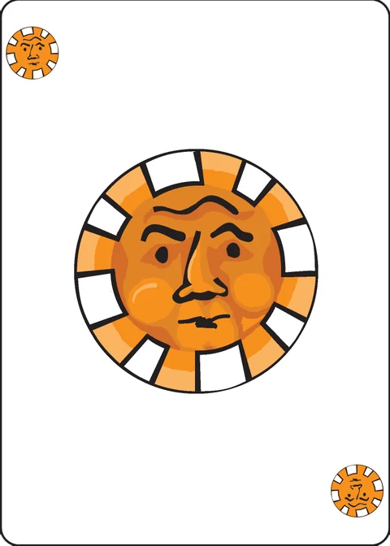

Ace Trump
a trick-taking game for 2–6 players — the first trick-taking game that was ever devised for the Decktet
Object of the game: To take as many tricks as possible.
(It works best with 3 or 4 players.)
Setup
The deck is dealt out evenly to the players: With three players, each is dealt 12 cards. With four players, each is dealt 9 cards. With five players, each player is dealt 7 cards and the final card is set aside. With six players, each is dealt 6 cards.
Two players games are usually played with only part of the deck. Each player is dealt 9 cards and the remainder are set aside. The game could be played with the entire deck, but it would be awkward and not really worth the trouble.
There is no bidding. The player to the dealer's left may lead any card.
Game play
Clockwise around the table, each player plays a card that matches a suit with the card that was led; if a player has no cards of the suit led, he may play any card from his hand.
In order to follow suit, a card need only match one suit. For example: If the Diplomat (8 of Moons and Suns) was led, then each subsequent player must play a card with a Moon or Sun on it if they can. They are not especially required to play a card with both a moon and sun, even if they have one.
If no trump was played, then the highest card that follows suit wins the trick. If any trumps are played, then the highest trump wins the trick. An Ace is below 2; a Crown is above 9.
The winner of the trick leads the next trick.
Trump: There is no trump suit until an Ace is played. The suit of that Ace is then trump for that trick and until another Ace is played.
Note that an Ace that decides trump does not automatically win the trick. If it follows suit, then it will definitely lose the trick to a higher trump.
Ties: In a game with three or more players, it is possible that two cards will be played that both follow suit and that are of the same rank. If two cards in a trick both follow suit but tie for highest rank (and no trump was played) then the one played later takes the trick.
Scoring: Each trick is worth 1 point. Points accumulate across multiple hands and you can play until someone reaches an agreed upon score, until an agreed upon time has been reached, or for an agreed upon number of total hands.
The extended deck
If you want to spice up the game, you can add in the Excuse, the Pawns, or both. Just shuffle them in at the beginning of the game, deal every player the same number of cards, and set the remainder aside without looking at it.
The Excuse: The Excuse may be played in any trick, even if the player who has it could play a card that would follow suit. However, the Excuse card never wins a trick.
Pawns: Pawns are a rank between 9s and Crowns. Ties between Pawns that both follow suit are resolved by order of play: The earlier one beats the later one.
Variants
There are several ways to change or add to the rules. In fact, Sticky Aces was originally the default.
Sticky Aces: In this variant, only the first Ace determines the trump suit. Subsequent Aces are simply the low card of their suit. This makes it a big advantage to go first, because it gives you the option of leading an Ace; that is guaranteed to lose the first trick, but determines the trump suit for the remainder of the hand.
Alternately, although it wouldn't be Ace Trump anymore, you could play a similar trick taking game without a variable trump. Just decide on the trump suit before dealing.
Tides of fortune: In this variant for 2 to 4 players, each player is dealt only one card for the first hand. After that, the last card played in the last trick of the previous hand determines the number of cards dealt to each player in the following hand: 1 each if the last card was an Ace, between 2 and 9 if the last card was a number, or 9 if the last card was a crown. Other than the variable hand size, the usual rules apply.
Note on this implementation
Two players: this app implements the wiki's recommended two-player form — each player is dealt 9 cards and the other 18 are set aside unlooked at.
Length of a match: the wiki leaves the target to agreement ("until someone reaches an agreed upon score … or an agreed upon number of total hands"). The app plays five hands of nine tricks each and the higher trick total wins. (45 tricks in total, so a drawn match is impossible.) The dealer alternates from hand to hand, and the player to the dealer's left leads; the wiki only states who leads the first hand.
Ties: the tie-break "the one played later takes the trick" is implemented as written, although in the basic deck no two cards share both a rank and a suit, so it can never actually arise. (The Pawn tie-break — the earlier Pawn wins — belongs to the extended deck.)
The extended deck: the optional Excuse and Pawns are not implemented; the game uses the basic 36-card deck only. Sticky Aces and Tides of fortune are also not implemented — the app plays the standard rule, where any Ace played changes the trump suit.
Pass and play: this is a hidden-hand game, so after each card is played the screen is covered with "Player N's turn" until the device is passed on and the hand is revealed.
Credits
Original design: P.D. Magnus.
Playtesting: Cristyn Magnus, Mike Chapman, Bryan Keneally, Robert Howell.
These rules are copied from the Ace Trump page of the Decktet wiki (page revision 10, 22 January 2018) so they can be read offline, under the wiki's CC BY-NC-SA 3.0 licence. Cards by P.D. Magnus, same licence.
Further reading: Ace Trump at BGG